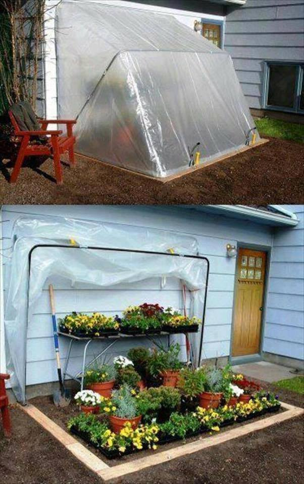

greenhouses
^ Projects infobox ^^
| image | Greenhouse.jpg |
| designers | |
| date | |
| vitamins | |
| materials | |
| transformations | |
| lifecycles | |
| tools | [[wrenches|Wrenches]] |
| parts | [[frames|Frames]], [[nuts|Nuts]], [[bolts|Bolts]], [[sheets|Sheets]], [[axial_bearings|Axial bearings]] |
| techniques | [[tri_joints|Tri joints]] |
| files | |
| suppliers | |
| git | |
Introduction
A greenhouse (also called a glasshouse, or, if with sufficient heating, a hothouse) is a structure with walls and roof made chiefly of transparent material, such as glass, in which plants requiring regulated climatic conditions are grown. These structures range in size from small sheds to industrial-sized buildings. A miniature greenhouse is known as a cold frame. The interior of a greenhouse exposed to sunlight becomes significantly warmer than the external temperature, protecting its contents in cold weather.
Challenges
Approaches


{| class="wikitable"
|-
! Quantity !! Part !! Link
|-
| 1 || [[https://hozon.com/|Hozon]] fertilizer mixer || [[https://hozon.com/|hozon.com]]
|-
| 1 || [[https://www.thingiverse.com/thing:3601354|Modular Hydroponics System]] || [[3d_printers|3D Printers]]
|}